零部件・
对应 OEM 料号的兼容精密零部件。
密封件、Si／SiC、金属、离子注入与工程塑料零件。
零部件供应
精密密封件・O 型圈
面向 CMP・刻蚀・CVD 腔体的氟橡胶 O 型圈／密封件，按 OEM 料号作为适配品制作。
| OEM 料号 | 品名 | 尺寸(mm) |
|---|---|---|
| 734-061280-014 | O-ring AS014 | 12.42 × 1.78 |
| 734-007524-284 | O-ring AS284 | 456.06 × 3.53 |
| 734-046356-329 | O-ring AS329 | 50.17 × 5.33 |
| 734-046356-226 | O-ring P50 | 49.70 × 3.50 |
| 734-021063-238 | O-ring AS238 | 88.49 × 3.53 |
| 734-021063-277 | O-ring AS277 | 291.69 × 3.53 |
| 3700-06977 | O-ring AS130 | 40.94 × 2.62 |
以上为代表性示例。每批次随附材质及尺寸检验报告。
材质・等级
FFKMFKM耐等离子耐高温真空用
特点
- OEM 料号的适配品（兼容品）
- 耐等离子・耐化学材料
- 尺寸 ø10mm～ø450mm 以上
- 可定制材质与尺寸
- 交期约 8 周
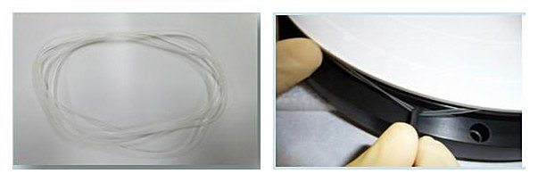
耗材
Si・SiC 耗材
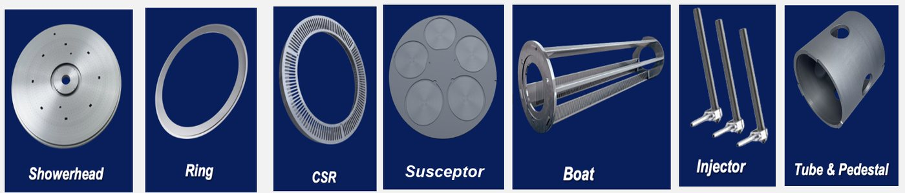
| 类别 | OEM | 品名 | 料号 |
|---|---|---|---|
| Si | Lam | Polished OUE | 716-082039-233 |
| Si | Lam | Polished OUE | 716-082039-235 |
| Si | TEL | Ring, focus 380-T4.0 | 3D10-202489-61 |
| Si | TEL | Electrode, outer DC2 EXT | 2L10-501683-61 |
| SiC | Lam Kiyo | EX top ring 4.5T | 716-089795-124 |
| SiC | Lam Kiyo | Top ring 4.19T | 716-086795-123 |
| SiC | TEL MK4 | Focus ring 3.95T | 1D99-190810-11 |
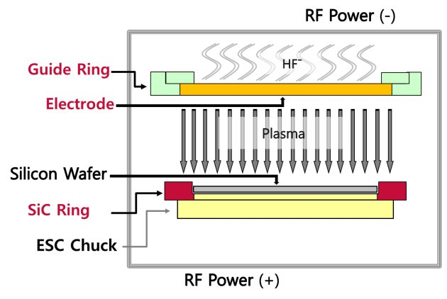
- 刻蚀・CVD 用 Si 部件喷淋头・Si 环・CSR，Si 晶舟・炉管・基座
- CVD SiC 聚焦环／边缘环按客户提供的图纸和规格制作
金属・离子注入・石墨部件
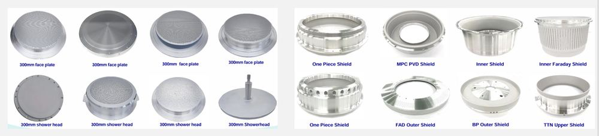

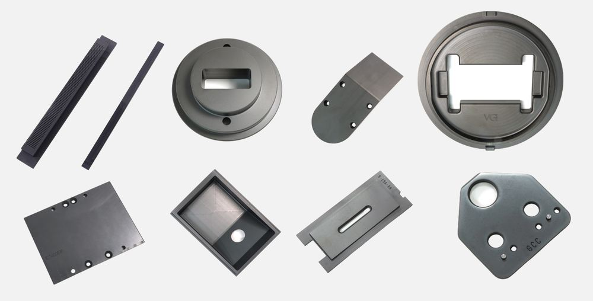
适用离子注入设备
- AMAT VIISta 900XP
- AMAT VIISta Trident / XP / XP2
- AMAT VIISta HC · MC · HE
- AMAT VIISta MEHD2
- Axcelis Purion H · XE · M
- Nissin Exceed 2000AH / 3000AH
石墨 W-001 ― 主要特性
- 密度
- 1.91 g/cm³
- 电阻率
- 12 μΩm
- 灰分
- 0.0005 %
- 导热系数
- 105 W/mK
工程塑料零件
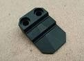
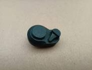
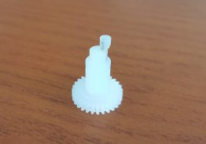
PBI・PVDF 等
- 用于湿法・刷洗设备的机械手导轨、腔体销与腔体头
- 耐磨・防静电
- 耐酸碱及有机溶剂，适用于高温 SPM
- 金属析出与吸水率极低
旋转基座・Slit Door・喷淋头
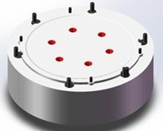
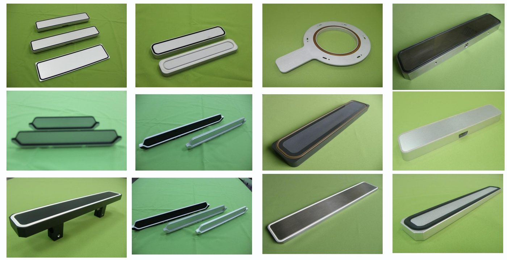
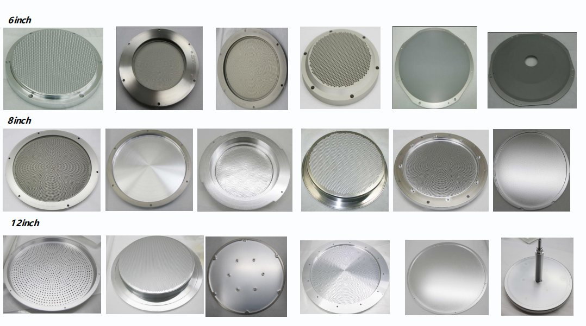